Анализ боевого потенциала субъекта
Боевой профиль
Урон по элите92%
Контроль толпы84%
Темп зачистки77%
Выживаемость58%
Имперский стиль100%
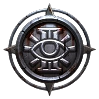
Warhammer 40,000: Darktide • личный архив для самой важной аколитки Инквизиции
Быстрый и удобный гайд, который можно открыть прямо с телефона перед каткой. Здесь собрана база по роли, приоритетам, оружию и общему ритму игры.
Псайкер — это класс про дисциплину, контроль и уничтожение самых опасных целей до того, как они успеют испортить жизнь всей команде. Всё как ты любишь.
Эксклюзивно для самой опасной девушки в Терциуме.
Если что‑то в этом гайде будет непонятно, или захочется попробовать билд под другое оружие, способности или стиль игры — просто скажи.
Я расширю эту страницу и добавлю новые билды.
Ниже два варианта игры: агрессивный билд на урон и билд поддержки с куполом. Оружие и экипировка используются одинаковые для обоих билдов. Сначала показаны сами билды и их особенности, а общий раздел экипировки расположен ниже на странице.
Протокол точечного истребления бронированных целей.
Талант Усиленных Псиоников используется в обоих билдах, так как по моему личному опыту даёт наибольший прирост полезности. Остальные варианты ощущаются заметно слабее.
Этот билд предназначен для уничтожения наиболее опасных и тяжёлых целей на поле боя. Твоя задача — стереть из реальности всё, что носит тяжёлую броню, элитных врагов и боссов. Ты — не просто боец. Ты — орудие санкционированного истребления.
В строке бафов появится фиолетовая иконка головы с числом 3. Пока ты не используешь Взрыв Мозга, этот эффект не исчезает. Пока активен этот баф, Взрыв Мозга не создаёт угрозу, что позволяет спокойно начинать серию уничтожения. Заряды накапливаются обычным уничтожением врагов.
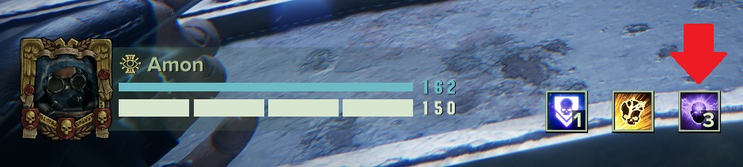
Используй способность до тех пор, пока угроза не поднимется до 80–90% угрозы. После этого активируй Отталкивание, чтобы сбросить угрозу, а затем продолжай использовать Взрыв Мозга. В этот момент способность будет применяться значительно быстрее, а элитные цели исчезают одна за другой.
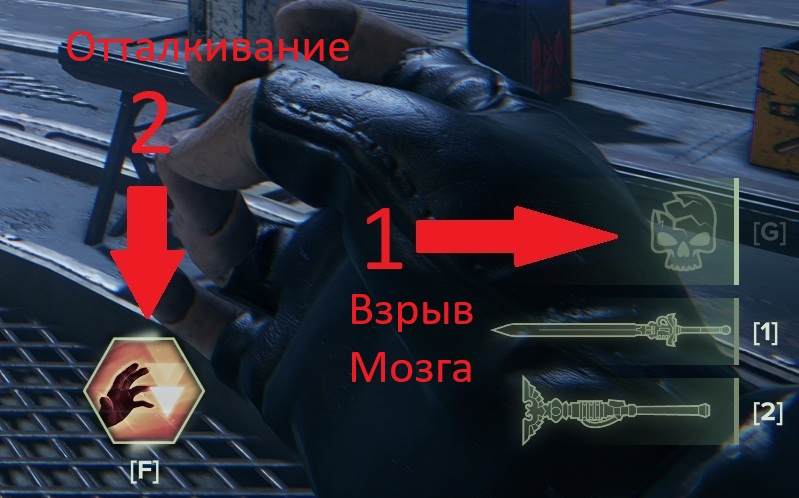
В этом билде используется талант, который увеличивает урон на 100%, если уровень угрозы достигает 100%. Однако цена за это — часть здоровья будет потеряна. Империум поощряет риск, но даже Инквизиция ценит выживших псайкеров, поэтому используй эту механику осознанно.
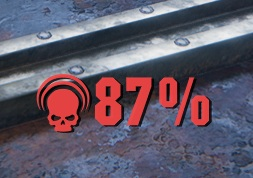
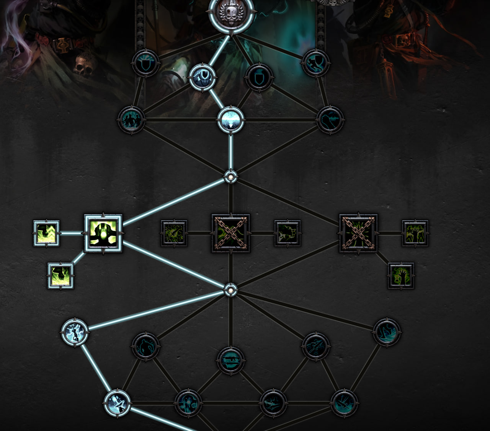
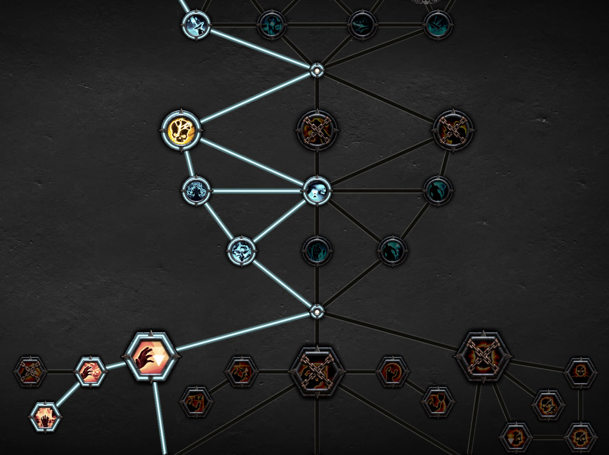
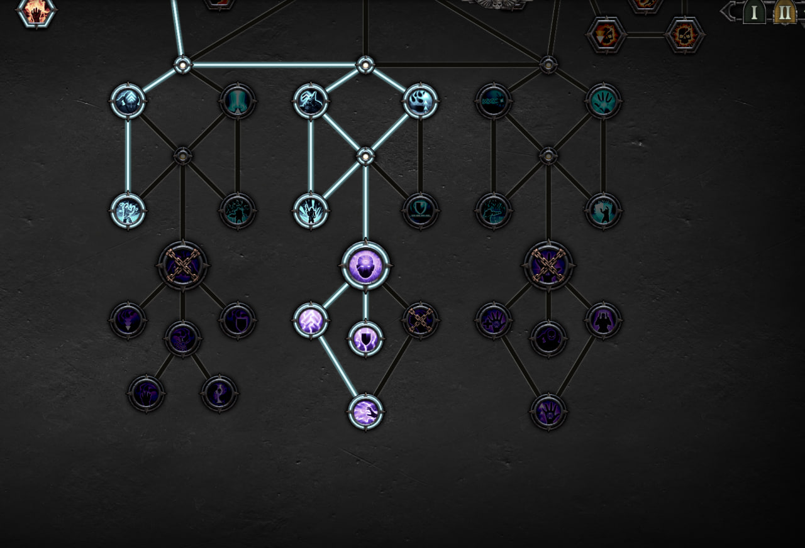
Опора ударной группы и хранительница телекинетического купола.
Талант Усиленных Псиоников используется и здесь, потому что по моему личному опыту он даёт наибольший прирост полезности. Остальные варианты работают не так впечатляюще.
Этот билд превращает тебя в опору всей группы. Ты поддерживаешь союзников и занимаешься быстрым истреблением слабых и обычных врагов, создавая одну из самых сильных защитных зон во всей игре.
Основная способность здесь — Наведение. Она выпускает психические осколки, которые перелетают от врага к врагу и почти всегда мгновенно уничтожают слабых противников. Это делает её идеальным инструментом для зачистки толп и быстрого получения зарядов Усиленных Псиоников.
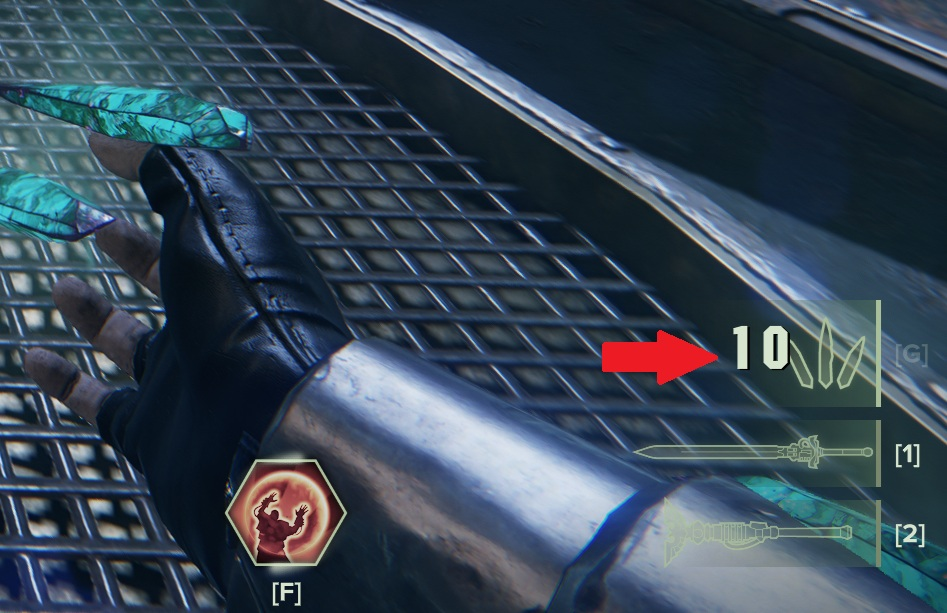
В этом билде по урону лучше сосредоточиться на группах слабых врагов, позволяя осколкам перескакивать между целями и очищать пространство. Пока остальные разбирают тяжёлые цели, ты сохраняешь ритм боя и не даёшь ереси собраться в критическую массу.
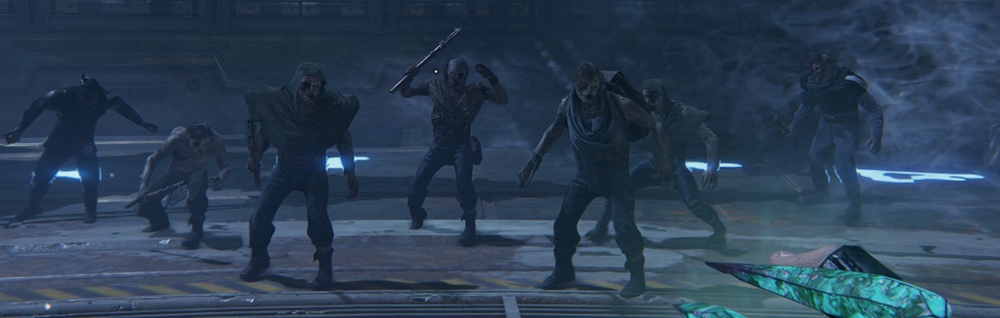
телекинетический купол — одна из сильнейших защитных способностей во всей игре. Когда он активен, пули не проходят, сетки не работают, а большинство атак дальнего боя полностью игнорируется. Фактически это зона абсолютной защиты от стрельбы. Единственная реальная угроза внутри купола — удары врагов в ближнем бою. Поэтому купол лучше прожимать как можно чаще, даже если прямо сейчас всё выглядит спокойно: угроза может появиться внезапно, а группа уже будет под защитой. Не нужен он только тогда, когда врагов поблизости нет вообще. Под куполом мы не умираем.
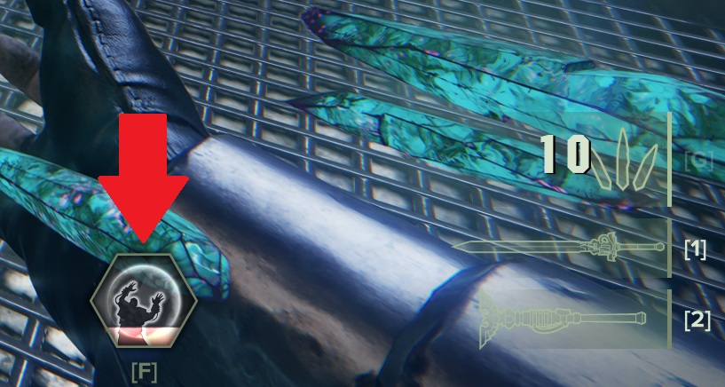
телекинетический купол" />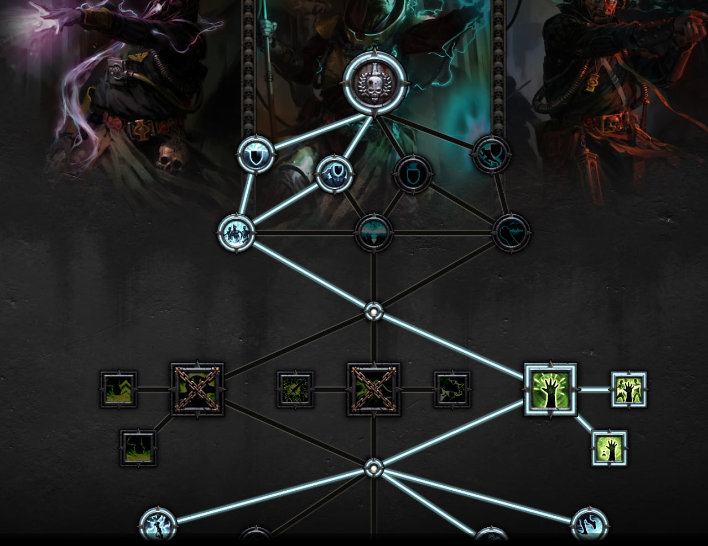
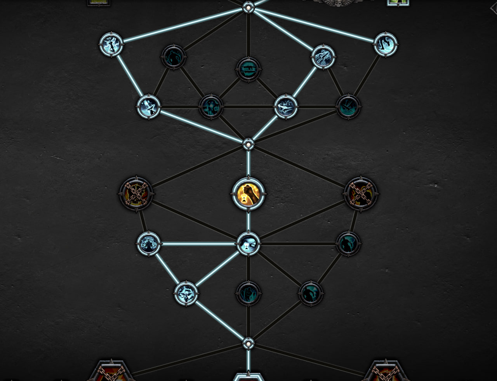
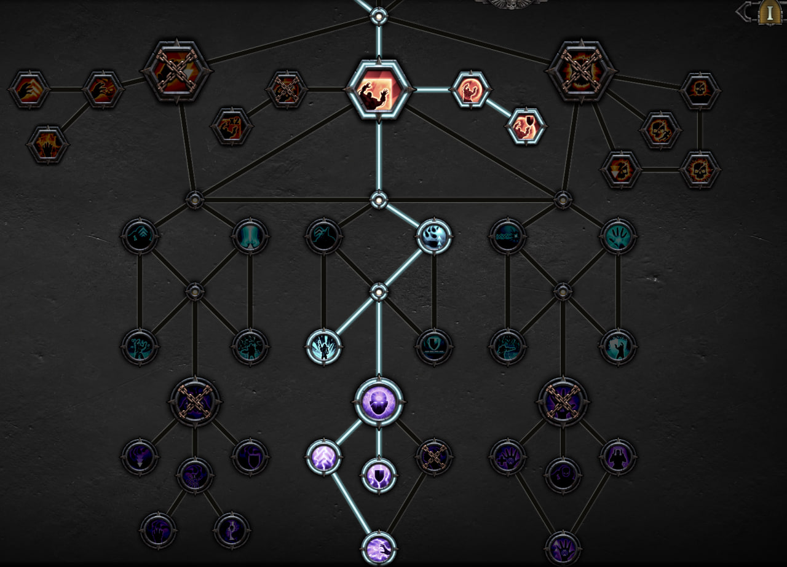
Эта экипировка используется для обоих билдов Псайкера: и для урона, и для поддержки с куполом.
Названия оружия или диковинок могут быть другими. Здесь важны именно благословления, улучшения и правильные специальные атаки на оружии, а также корректно подобранные характеристики на диковинках.
В ближнем бою основной инструмент — Завет, длинный пламенный психосиловой меч. Сначала собирай на нём полный заряд, а затем выпускай специальный удар в толпу. Результат, как правило, одинаков: всё, что стояло перед тобой секунду назад, перестаёт существовать. Неважно, сколько там врагов — энергия варпа делает своё дело. Это один из самых мощных ударов по скоплению противников, который есть у Псайкера.
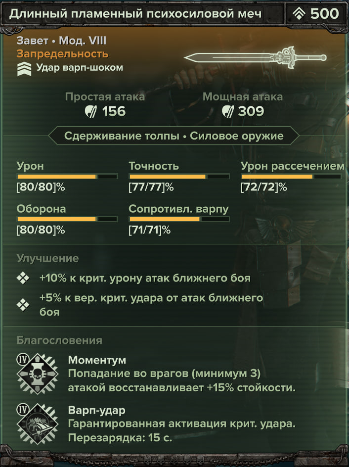
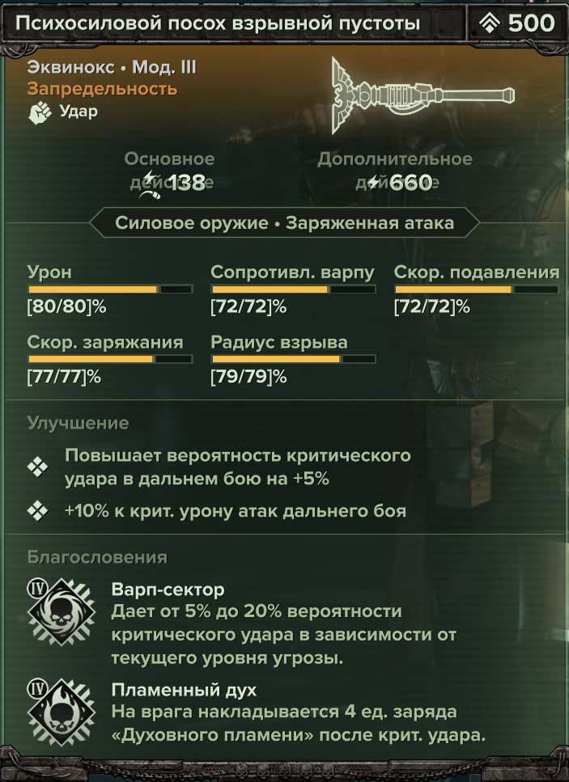
В билде Аннигилятор этот посох часто становится основным источником урона. Его атаки иногда вызывают эффект Взрыва Мозга на враге без ручного использования способности и без накопления угрозы, что делает его особенно мощным инструментом против элиты.
В билде Поддержка он используется реже из‑за наличия способности «Наведение», которая берёт на себя основную работу по зачистке. Однако посох остаётся отличной палочкой‑выручалочкой, если заряды Наведения закончились и ещё не восстановились.
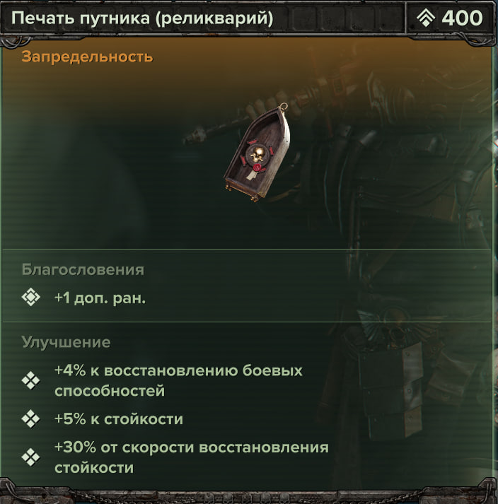
Использовать одинаковые характеристики на всех диковинках. А именно: